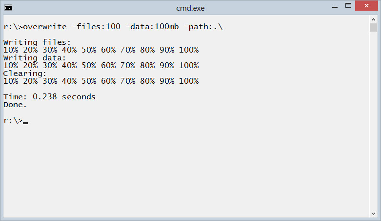

Overwrite is a program that overwrites empty space on disk.
The empty space on disks can contain sensitive data and informations that can be recovered with recovery software and forensics, this can be security and privacy risk.
The operating systems and programs automatically write and delete data on disks, for example word processor save copies of the document for recovery and later deletes them. Also when users delete files they are only marked as deleted but the files remain on disk and can be recovered.
To protect security and privacy the remaining data on empty space on disks has to be overwritten.
To properly clean remaining data both metadata as file names and content has to be overwritten, this program has parameters as -files and -data that specify quantity of metadata and content that has to be overwritten.
Source code and executables for different architectures and operating systems can be found in code repositories.
Overwrite program is written in C programming language it is contained in one file, can be compiled on different operating systems and also can be used without compilation, the source code can be run directly with iny C compiler ex: tcc -run overwrite.c
Source Code and ExecutablesOverwrite empty space on disk, write number of small files and data. USAGE: overwrite [-h -test -one -rand -block:] (-files: &| -data:) -path: -h Print help and usage message. -test For test, don't delete written files. -one Overwrite with 1, default with 0. -rand Overwrite with random data, default with 0. -block Block size, default 4096 bytes as NTFS and EXT4. -files Number of files to write, block size each. -data Quantity of data to write, ex: 1mb, 1gb, all. -path Path to directory where to write data. EXAMPLE: # Write 10 files and 10Mb data, on NTFS overwrite -files:10 -data:10mb -path:c:\ # Write random data, block size 512 bytes on FAT FS overwrite -rand -block:512 -files:10 -data:10mb -path:/mnt/usbdisk/ Copyright GPLv3 http://github.com/ivoprogram/overwrite